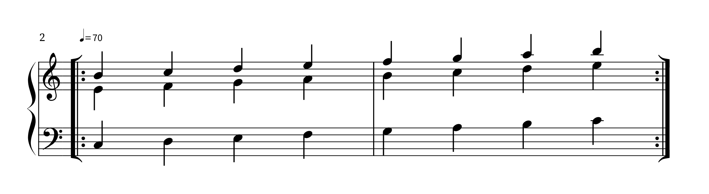
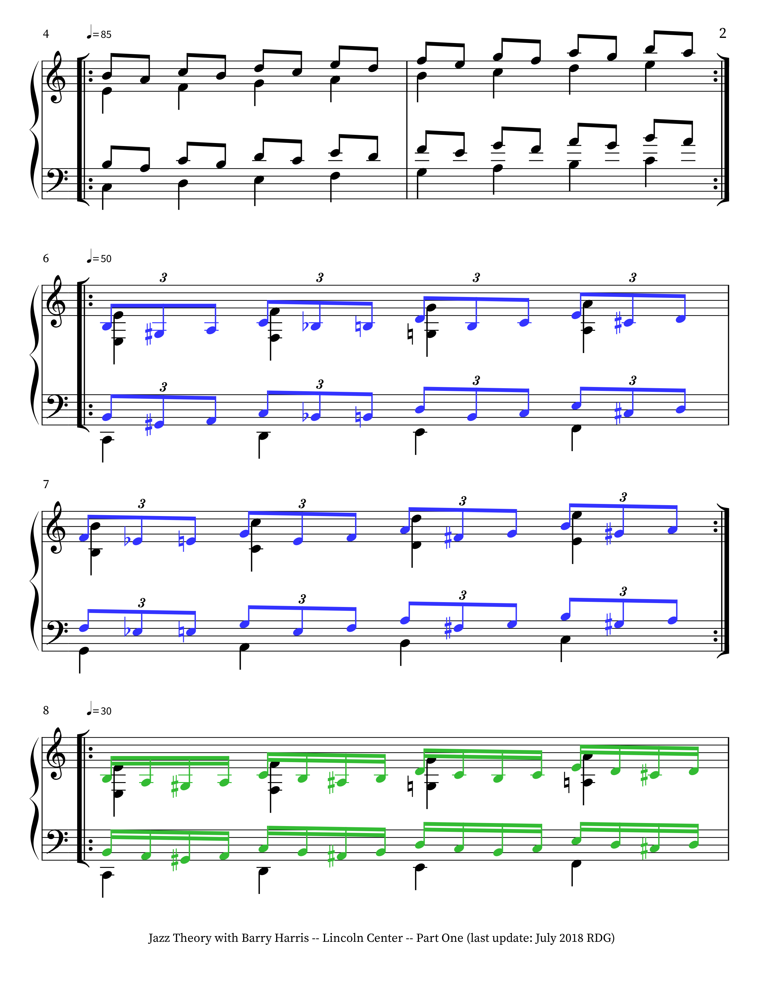
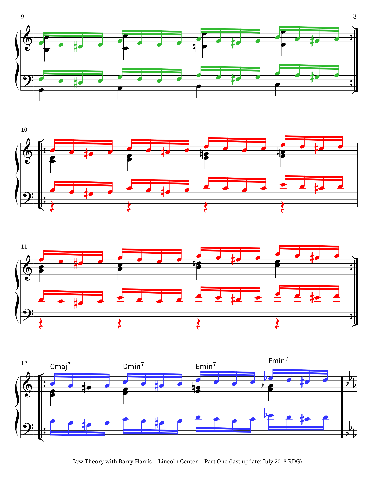
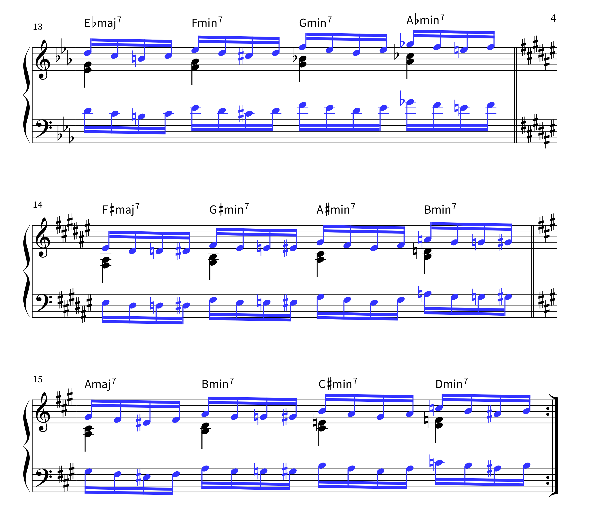
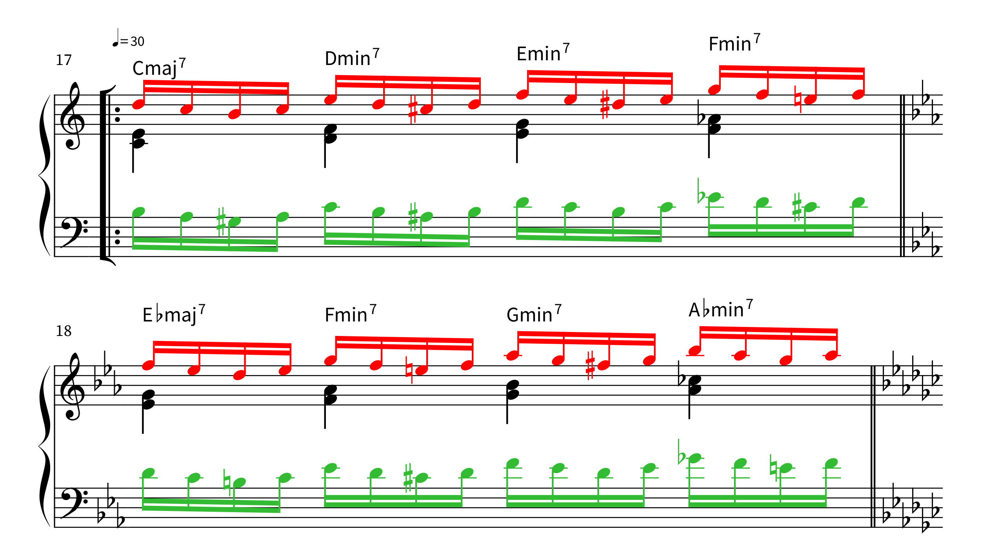
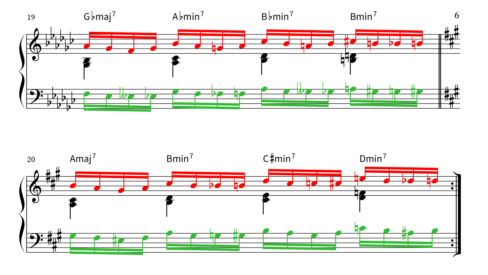
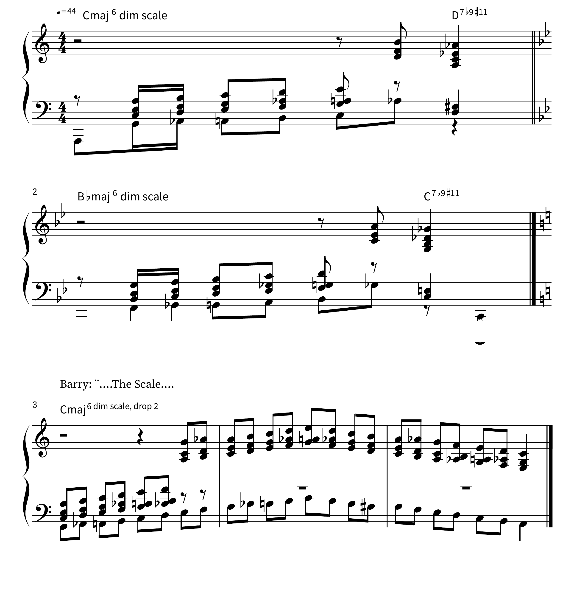
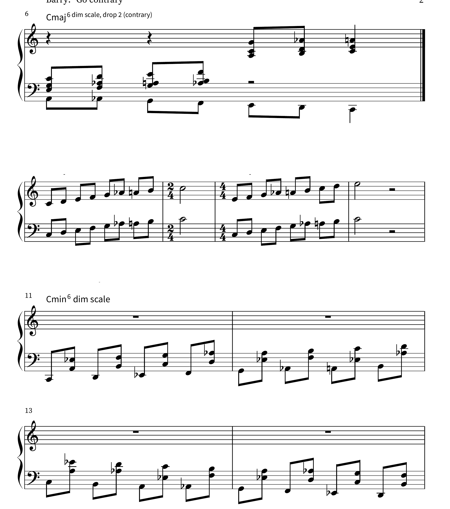
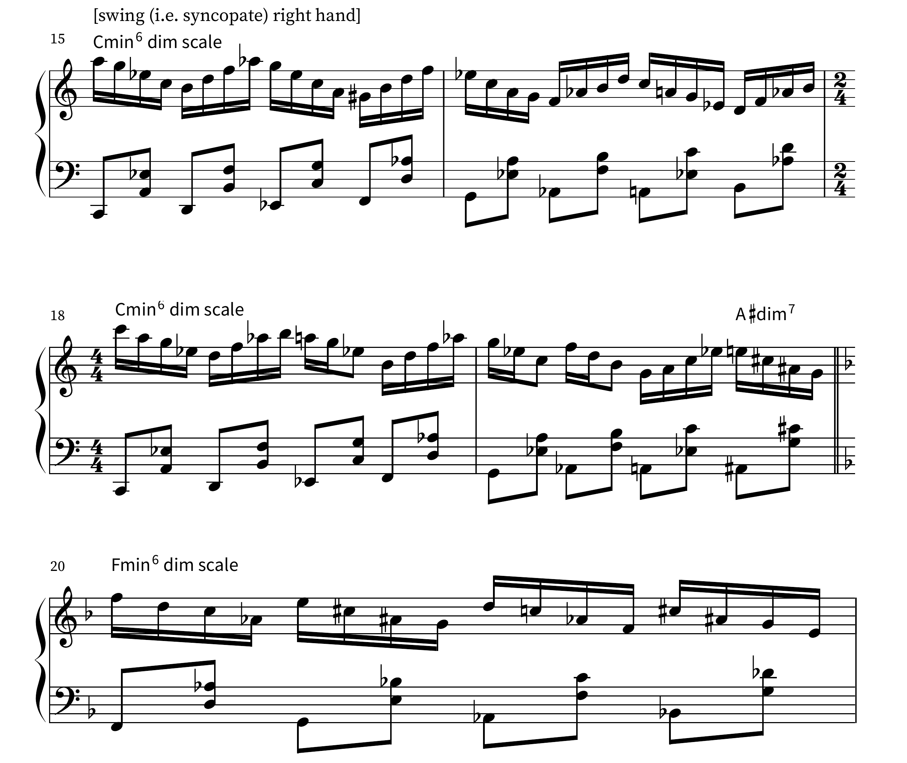
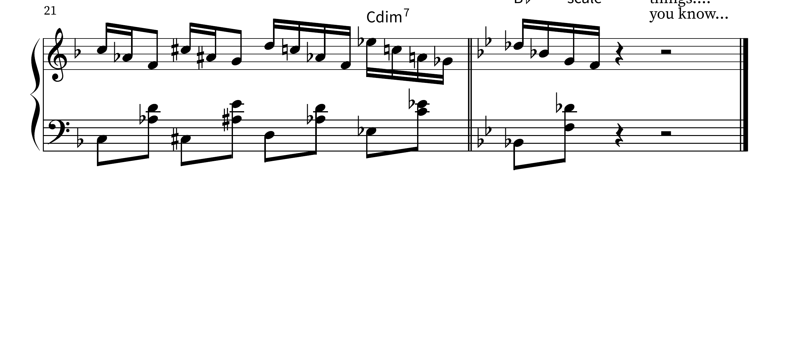

Section 13.5 Daily Scale and Chord Exercises
Barry Harris was insistent that theory without daily practice is meaningless. His workshop exercises are designed to be drilled slowly and methodically, at a tempo where every note is even, every chord change is smooth, and the sound of each chord type is committed to memory. He recommended beginning in C major and then transposing each exercise to all twelve keys before moving on.
The exercises below form the core daily practice routine that Harris taught at his workshops. They should be practised with a metronome and, once comfortable, with a rhythm section playalong.
Subsection 13.5.1 Exercise 1: The Bebop Scale
Play each of the three bebop scales (major, dominant, and minor) ascending and descending for two octaves in every key. Pay close attention to the placement of the chromatic passing tone — it should sound smooth and connected, not like an accidental. Barry Harris often said that the bebop scale should feel like a single phrase, not like a seven-note scale with a wrong note added.
Practice progression:
-
Right hand alone, one octave ascending and descending, slowly (quarter = 60).
-
Left hand alone, one octave ascending and descending.
-
Hands together in parallel motion (both hands playing the same scale in the same direction).
-
Hands together in contrary motion (right hand ascending while left hand descends).
-
Increase tempo gradually to quarter = 120 before moving to the next key.
Begin with the dominant bebop scale, as it is the most common in jazz. The major bebop scale follows naturally, and the minor bebop scale should be introduced once the first two are secure.
Subsection 13.5.2 Exercise 2: The 6th Chord / Diminished Alternation
This is the central exercise of the Barry Harris method. It trains the ear, the fingers, and the musical imagination simultaneously. Play the ascending 6th chord and diminished chord exercise (shown in the previous section) using close four-voice block chords.
Practice routine:
-
Right hand alone, ascending: C6 — B°7/D — C6/E — B°7/F — C6/G — C6/A — B°7 — C6 (upper octave).
-
Right hand alone, descending: reverse the above, moving from the upper C6 back to the root position.
-
Left hand plays sustained root (C in the bass), right hand ascends and descends.
-
Left hand plays the bass note that corresponds to the inversion in the right hand (walking through the scale: C — D — E — F — G — A — B — C).
-
Play the full exercise in all twelve keys.
Listen carefully to the way each chord connects to the next. Barry Harris emphasised that the exercise should produce a singing, melodic sound, not a mechanical arpeggio. The top voice traces the major bebop scale — this is the melody you are harmonising.
Subsection 13.5.3 Exercise 3: The Harmonized Major Scale
This exercise combines the melodic and harmonic aspects of the system. Play the C major scale in the right hand (single notes, one octave ascending) while assigning each note its correct chord symbol from the 6th / diminished system:
-
Scale degrees 1, 3, 5, 6 (C, E, G, A) belong to the C6 chord.
-
Scale degrees 2, 4, 7 (D, F, B) belong to the B°7 chord.
In practice, each note of the melody is played as the top voice of the corresponding four-note block chord. The figure below shows the chord symbol that applies to each scale degree as you ascend.
Practice routine:
-
Sing or play the scale degree while naming the chord aloud (for example: “C — C6, D — B°7, E — C6, F — B°7 ...”).
-
Play the melody note as the top voice of a full four-voice block chord in the right hand. Use the inversions from the table in the previous section, moving upward smoothly.
-
Add a bass note in the left hand: the root of the chord for chord tones, or the bass note of the inversion for passing diminished chords.
-
Practise descending as well as ascending.
-
Transpose to all twelve keys.
Subsection 13.5.4 Barry Harris Jazz Theory — Lincoln Center Part 1
The following exercises are transcribed from Barry Harris’s Jazz Theory session at Lincoln Center’s Jazz Academy (transcript by R. Glover, July 2018; source: youtu.be/F8JJncSUdUU). Harris demonstrates two core exercises: first, a C major scale practised at progressively faster tempos; second, the harmonized diatonic major scale cycling through all twelve keys.






Harris emphasised that the twelve keys divide into four "family" groups related by minor thirds: {C, E♭, G♭, A} and {D♭, E, G, B♭} are two such groups (with D, F, A♭, B forming another). Practise the harmonized scale exercise in all twelve keys before moving on.
Subsection 13.5.5 Barry Harris 6th Dim Stride Exercise
The following notation is transcribed from a live workshop demonstration by Barry Harris (source: youtu.be/G1siDXQ92Nw, 7:58–9:00; transcript by R. Glover, July 2018). Harris demonstrates the 6th diminished scale applied in a stride piano texture, moving through several variations: the basic stride pattern in C major and B♭ major, drop-2 voicings, contrary motion, the scale in tenths, the minor 6th diminished scale (C minor and F minor), and finally a diminished scale approach.




Subsection 13.5.6 Practice Tips from the Barry Harris Workshop
Barry Harris offered the following guidance consistently throughout his teaching:
-
Slow is fast. Always begin at a tempo where every note speaks clearly and every chord is balanced. Speed is a consequence of accuracy, not a goal in itself.
-
Twelve keys, every day. A pattern learned in only one or two keys is not truly learned. The chromatic button accordion makes this particularly accessible, since the fingering pattern for any exercise is identical in every key.
-
Listen to the top voice. When practising block chord exercises, the top voice is the melody. Train yourself to hear it singing above the harmony, and ensure it has a connected, vocal quality.
-
Hear the chord before you play it. Harris insisted that students should be able to sing or audiate each voicing before placing their hands on the keys. The ear leads, the hands follow.
-
The diminished is not a chord, it is a passageway. The B°7 is a connecting structure — a set of four passing tones that link one position of the C6 chord to the next. Understanding it this way keeps the ear focused on the tonic harmony and prevents the diminished chord from sounding like an unrelated intrusion.